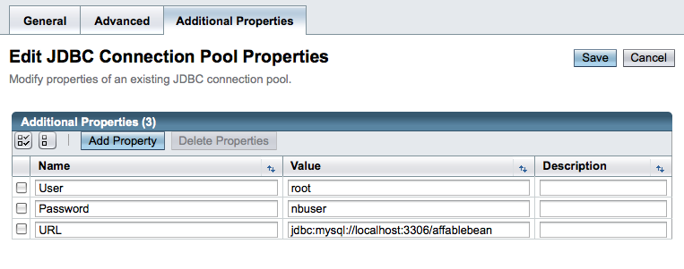

Apache NetBeans
Apache NetBeansLatest release
Учебный курс по электронной коммерции NetBeans – указания по настройке
| This tutorial needs a review. You can open a JIRA issue, or edit it in GitHub following these contribution guidelines. |

Figure 1. Содержимое на этой странице применимо к IDE NetBeans, версий 6.8 и 6.9
Для работы с каким-либо разделом учебного курса без изучения других разделов необходимо выполнить несколько предварительных действий по настройке среды разработки.
-
Настройка сервера баз данных MySQL. Выполните действия, описанные в разделе Связь с сервером базы данных
-
Создайте на сервере базы данных схему
affablebeanи введите в базу данные примера:-
Щелкните affablebean.sql и скопируйте (Ctrl-C; ⌘-C в Mac) все содержимое файла.
-
Откройте редактор SQL в среде IDE. В окне 'Службы' (Ctrl-5; ⌘-5 в Mac), щелкните правой кнопкой мыши узел подключения к базе данных
affablebean( ) и выберите 'Выполнить команду'.
) и выберите 'Выполнить команду'.
-

Figure 2. Выберите элемент
Откроется редактор SQL среды IDE.
-
Вставьте (Ctrl-V; ⌘-V в Mac) все содержимое файла
affablebean.sqlв редактор.
-
Нажмите кнопку 'Запустить SQL' (
 ) на панели инструментов редактора. На сервере MySQL будет выполнен сценарий. Для базы данных создаются релевантные таблицы с добавлением данных примера в таблицы
) на панели инструментов редактора. На сервере MySQL будет выполнен сценарий. Для базы данных создаются релевантные таблицы с добавлением данных примера в таблицы productиcategory.
-
Создание пула подключений и ресурса JDBC на сервере GlassFish.
-
Перейдите в окно "Службы" (Ctrl-5; ⌘-5 в Mac) и разверните 'Серверы' > узел 'GlassFish Server 3' и выберите 'Свойства'. В открывшемся окне "Серверы" проверьте, что выбран параметр "Включить развертывание драйвера JDBC". Если для проекта требуется драйвер MySQL Connector/J, этот параметр обеспечит развертывание драйвера на сервере GlassFish при развертывании проекта. (Если сервер уже запущен, необходимо перезапустить его).
-
В окне 'Службы' щелкните правой кнопкой мыши узел GlassFish Server 3 и выберите 'Запустить'.
-
После запуска сервера щелкните правой кнопкой мыши узел GlassFish Server 3 и выберите 'Просмотр консоли администратора'.
-
Зарегистрируйтесь на консоли (имя пользователя/пароль по умолчанию:
admin/adminadmin). -
На консоли администратора в дереве в левой области экрана разверните узел "Ресурсы > JDBC" и щелкните узел "Пулы подключений".
-
В интерфейсе "Пулы подключений" нажмите кнопку "Создать" и укажите следующие подробные сведения:
-
Имя:
AffableBeanPool -
Тип ресурса:
javax.sql.ConnectionPoolDataSource -
Поставщик базы данных:
MySql
-
-

Figure 3. Укажите настройки для создания пута подключений для соединеняи с базой данных MySQL
-
Нажмите кнопку "Далее". Примите значения по умолчанию и нажмите кнопку "Готово".
-
В интерфейсе "Пулы подключений" щелкните новый элемент
AffableBeanConnectionPoolдля внесения следующих изменений на вкладке "Общее":-
Имя класса источника данных:
com.mysql.jdbc.jdbc2.optional.MysqlDataSource
-

Figure 4. Задайте имя класса источника данных для пула подключений
-
Нажмите кнопку "Сохранить".
-
Откройте вкладку "Дополнительные свойства" и проверьте, что установлены значения для следующих трех свойств. (В списке могут присутствовать и другие свойства, значения для которых установлены по умолчанию. Однако значения для следующих трех свойств необходимо указать вручную.)
-
Пользователь:
root -
Пароль:
nbuser -
URL:
jdbc:mysql://localhost:3306/affablebean
-

Figure 5. Задайте имя пользователя, пароль и URL-адрес для базы данных
-
Нажмите кнопку "Сохранить".
-
Откройте вкладку "Общее" и нажмите "Ping". Должно появится сообщение об успешном выполнении команды ping. Теперь пул подключений
AffableBeanPoolсоединен с сервером базы данных MySQL.

Figure 6. Проверьте с помощью команды Ping сервер MySQL, чтобы определить возможность соединения для пула подключений
-
В дереве консоли администратора в левом столбце разверните узел "Ресурсы > JDBC > Ресурсы JDBC". В главном окне откроется интерфейс "Ресурсы JDBC".
-
Для создания нового ресурса JDBC нажмите кнопку "Создать" и укажите следующие подробные сведения:
-
Имя JNDI:
jdbc/affablebean -
Пул подключений:
AffableBeanPool
-

Figure 7. Укажите имя JNDI и пул подключений для создания ресурса JDBC
-
Нажмите кнопку "ОК".
После настройки сервера MySQL к нему можно подключиться в окне "Службы" в среде IDE. Должна быть создана база данных affablebean с заполненными таблицами product и category (для их заполнения используются данные примера). Далее запустите сервер GlassFish и создайте пул подключений, с помощью которого сервер сможет соединиться с базой данных affablebean. Наконец, создается ресурс JDBC, который используется в приложении для обращения к пулу подключений сервера.
Теперь можно открыть и запустить снимки любых проектов из разделов учебного курса.
link:/about/contact_form.html?to=3&subject=Feedback: NetBeans E-commerce Tutorial - Setup Instructions[Мы ждем ваших отзывов]